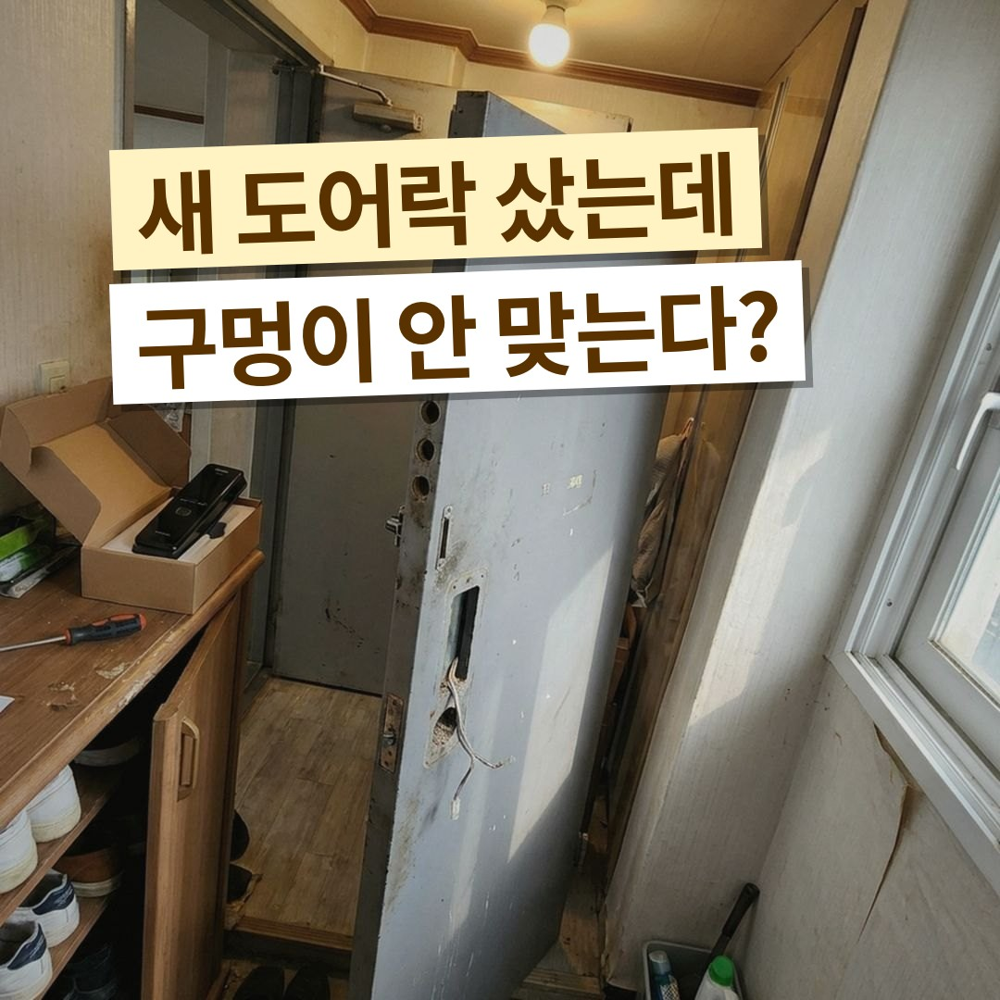
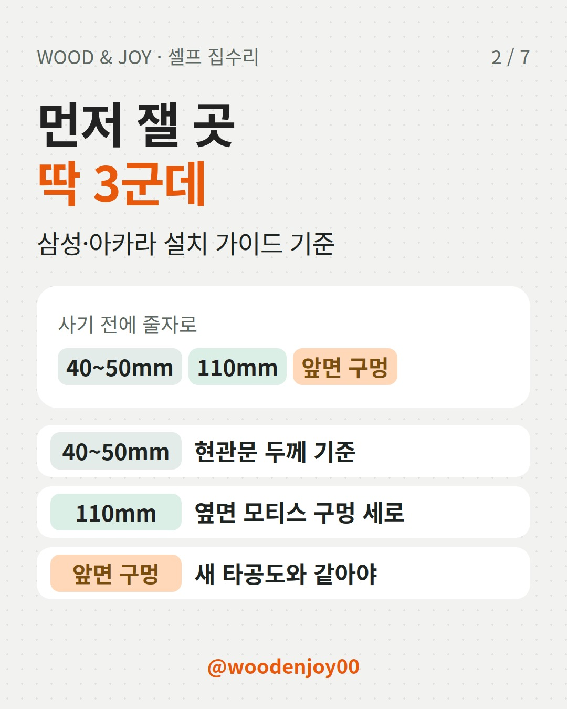
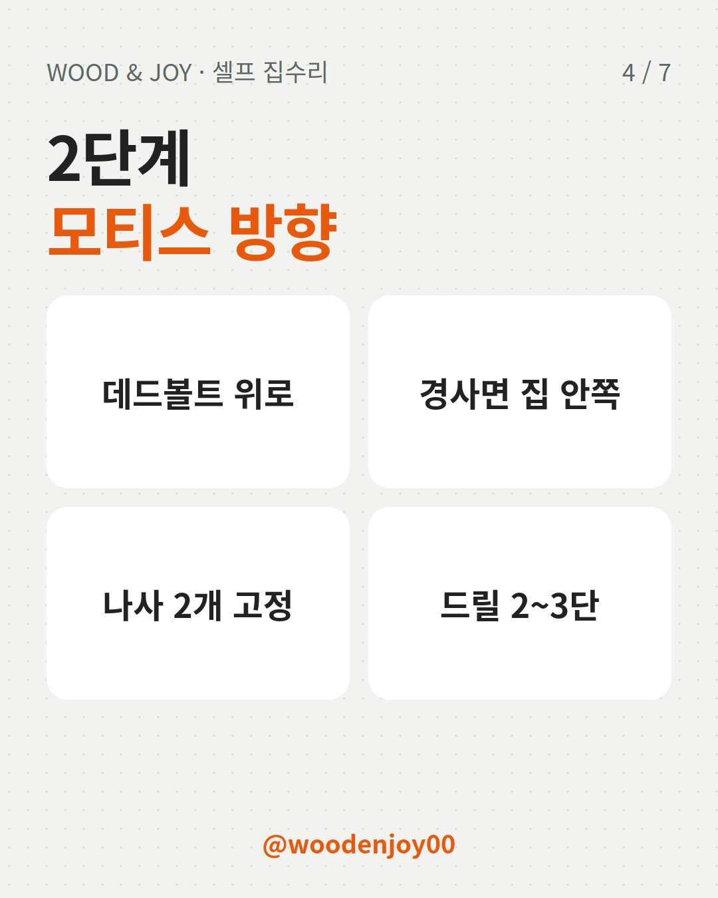
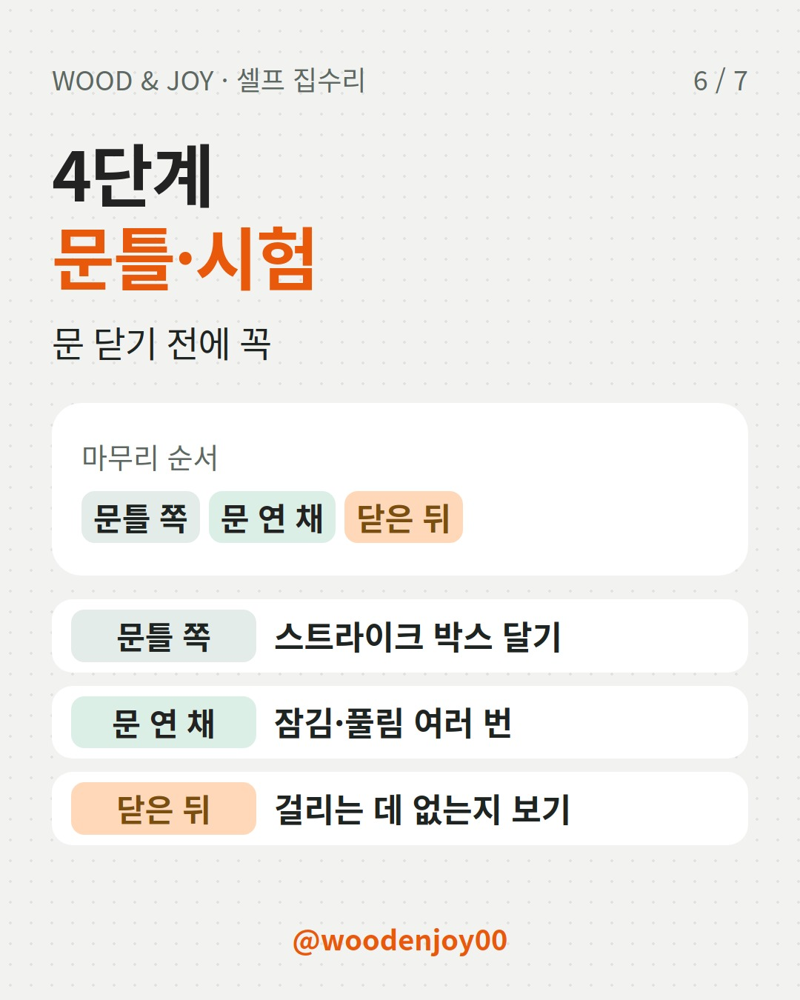

현관문 도어락 교체하려고 새 걸 샀는데, 헌 걸 다 떼고 나서야 구멍이 안 맞는 걸 알게 되는 일이 제일 흔해요.
문 두께, 옆면 모티스 구멍, 앞면 구멍. 이 3곳이 기존 것과 맞으면 드라이버로 셀프 교체가 되고, 하나라도 다르면 새로 뚫어야 하니 업체를 부르는 편이 안전해요.

기존 도어락과 타공(문에 뚫린 구멍) 규격이 같은 집이에요. 오늘의집 가이드에는 규격이 같으면 드라이버 하나로 30~40분이면 바꿀 수 있다고 나와 있어요.
규격이 다르면 얘기가 달라져요. 구멍을 새로 뚫거나 보강판을 대야 하니까요. 도어락은 제조사·모델마다 구멍 위치와 크기가 달라서, 인기 모델이라고 우리 집 문에 맞는다는 보장은 없어요.
딱 3곳이에요. 아래 숫자는 삼성 주키형 DIY 설치 가이드와 아카라 K100 설치 안내에 적힌 값이에요(2026년 11월 확인).
| 잴 곳 | 가이드에 적힌 기준 | 안 맞으면 |
|---|---|---|
| 문 두께 | 40~50mm | 샤프트 같은 부자재가 따로 필요하거나 설치 불가 |
| 문 옆면 모티스 구멍 | 세로 110mm, 가로 25~26mm | 문을 다시 가공해야 함 |
| 앞면 구멍 | 지름·위치가 새 제품 타공도와 같아야 함 | 추가 타공이나 보강판 |
| 문 종류 | 철제 방화문 기준 | 유리문·샷시문·나무문은 전용 모델 |

모티스(문 옆면에 들어가는 잠금 몸체) 가로가 삼성 가이드는 26mm, 아카라는 25mm예요. 모델마다 1mm 차이도 날 수 있으니 표는 기준으로만 보고, 살 모델 상세 페이지의 타공도와 직접 맞춰 보세요.
제니스 방화문은 일반 방화문보다 두꺼운 편이라고 아카라 안내에 따로 적혀 있어요(50~60mm). 이 문이면 전용 스트라이커가 필요한지 먼저 확인하세요.
그럴 수 있어요. 무타공은 구멍을 더 뚫느냐를 말하고, 푸시풀은 밀고 당겨 여는 손잡이 모양을 말해요. 둘은 따로 봐야 해요.

삼성 가이드는 모든 단계에서 전동드릴을 2~3단(보통) 세기로 쓰라고 해요. 래치볼트 방향이 반대면 모티스 위아래 나사를 풀고 래치볼트를 떼어 돌려 끼우면 돼요.
새 도어락은 멀쩡한데 문이 끝까지 안 닫힌다면 도어클로저 쪽도 봐 주세요. 도어클로저 속도 조절, 현관문이 덜 닫힐 때 나사 2개만 보세요

같은 규격 1:1 교체는 셀프, 새로 뚫어야 하거나 유리문·중문·두꺼운 단열문이면 업체예요. 삼성 가이드는 20년 넘은 아파트라면 문틀과 문이 나란한지 꼭 점검하라고 해요. 문이 틀어져 있으면 도어락만 바꿔서는 잘 안 맞으니 업체와 상의하세요.
사기 전 체크리스트
Q. 문이 30mm로 얇은데 달 수 있나요?
아카라 K100 안내 기준으로는 3cm 문은 설치가 어렵다고 해요. 얇은 문에 맞는 모델이 따로 있는지 제조사에 물어보세요.
Q. 오래된 문이라 구멍이 여기저기 뚫려 있어요.
구멍이 여기저기 뚫린 오래된 문은 보강판을 따로 사야 한다고 삼성 가이드에 나와 있어요.
Q. 도어락고장 나서 바꾸는 건데 같은 브랜드로 사야 하나요?
브랜드보다 타공 규격이 맞는지가 먼저예요. 떼기 전에 찍어 둔 사진으로 구멍 위치를 비교하세요.
3줄 요약
여러분 집 현관 도어락은 손잡이 달린 주키형인가요, 손잡이 위에 따로 붙은 보조키형인가요? 댓글로 알려 주세요.
지금 줄자 들고 문 두께부터 재 보세요. 방문 손잡이도 같이 바꿀 생각이면 이 글도 이어서 보세요. 문고리 교체 전 백셋부터 재세요, 60·70mm 틀리면 반품